Otto Von Bismarck

Date of Birth: 1st April 1815
Date of Death: 30th July 1898 (aged 83)
Influence: Otto von Bismarck is most famous for his role in German unification. He became a hero to German nationalists, who built monuments honouring him. While praised[by whom?] as a visionary who kept the peace in Europe through diplomacy, he is criticised for his persecution of Poles and Catholics as well as the immense power centralised within his office as Chancellor. He is also criticised by opponents of German nationalism, as it became engrained in German culture, galvanising the country to aggressively pursue nationalistic policies in both World Wars.
Theodore Roosevelt Jr.
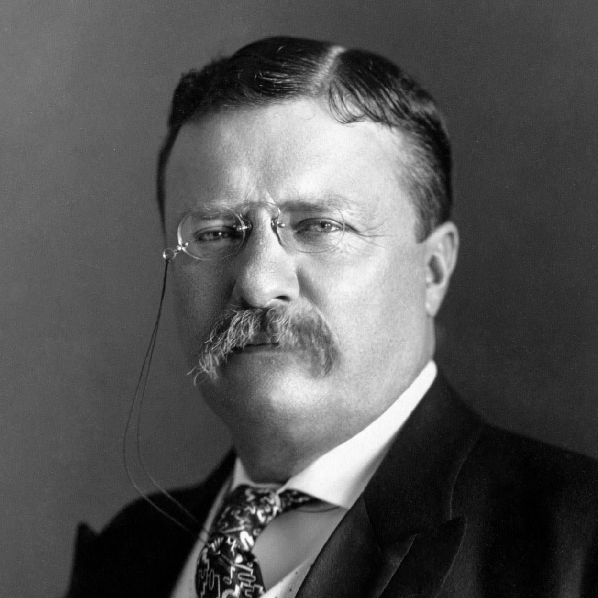Date of Birth: 27th October 1858
Date of Death: 6th January 1919 (aged 60)
Influence: Historians credit Roosevelt for changing the nation's political system by placing the "bully pulpit" of the presidency at center stage and emphasizing character as much as issues. His accomplishments include trust busting and conservationism. He is a hero to liberals and progressives for his early proposals that foreshadowed the modern welfare state, including federal taxation, labor reforms, and more direct democracy. Conservationists admire Roosevelt for prioritizing the environment and selflessness towards future generations. Conservatives and nationalists respect his commitment to law and order, civic duty, and military values. Dalton states, "Today he is heralded as the architect of the modern presidency, as a world leader who boldly reshaped the office to meet the needs of the new century."
Vladimir Lenin
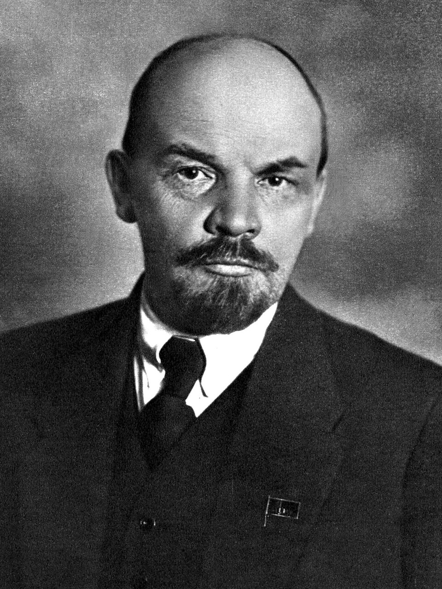Date of Birth: 22nd April 1870
Date of Death: 21st January 1924 (aged 53)
Influence: Lenin was the posthumous subject of a pervasive personality cult within the Soviet Union until its dissolution in 1991. Under Stalin, he became an ideological figurehead of Marxism–Leninism and a prominent influence over the international communist movement. A controversial and highly divisive figure, Lenin is praised by his supporters for establishing a revolutionary government which took steps towards socialism, while his critics accuse him of establishing a dictatorship which oversaw mass killings and political repression against the anti-revolution forces. Today, he is widely considered one of the most significant and influential figures of the 20th century.
 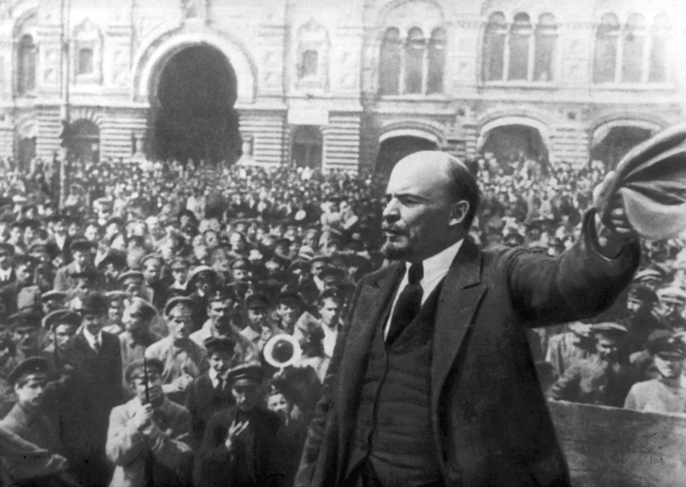
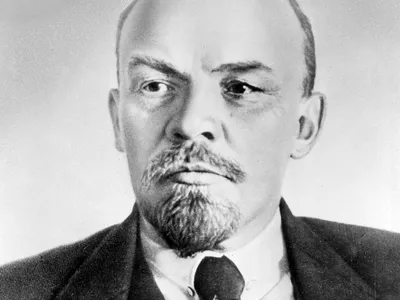
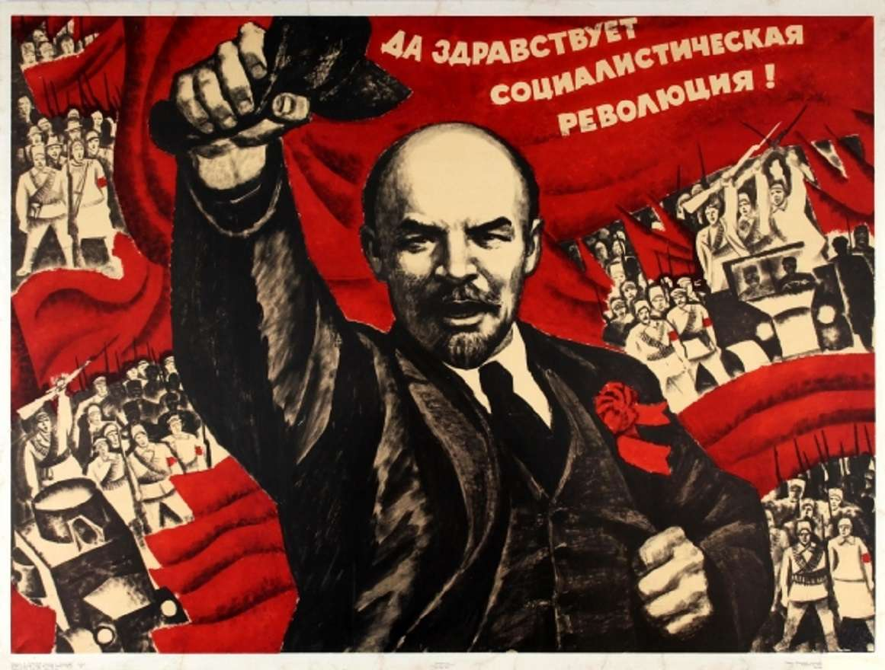
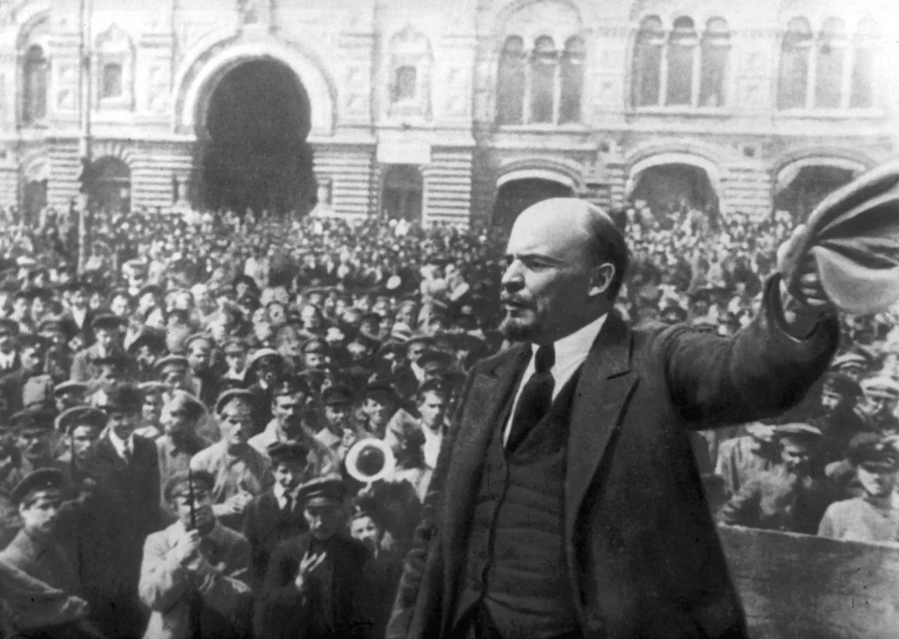
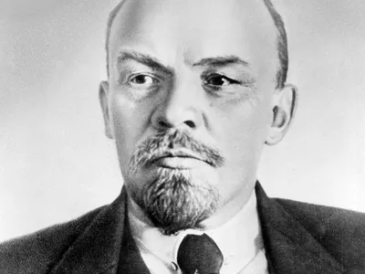
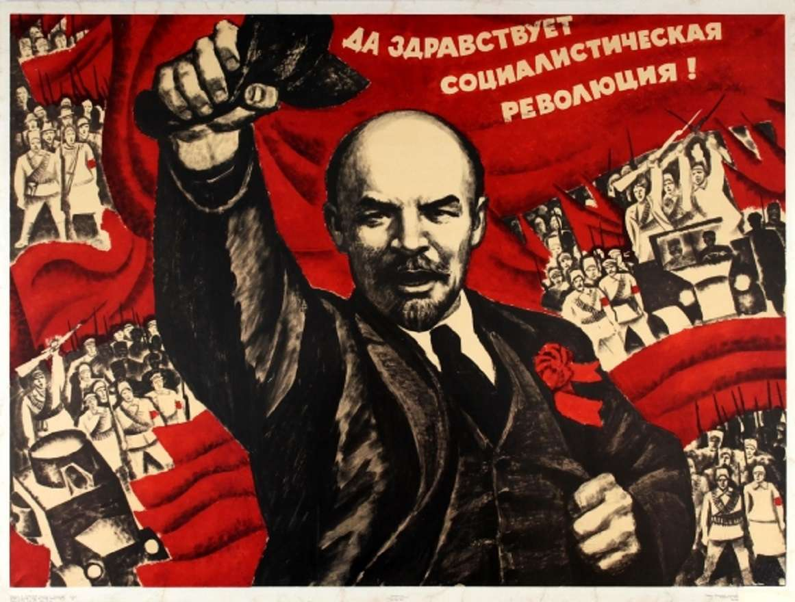
 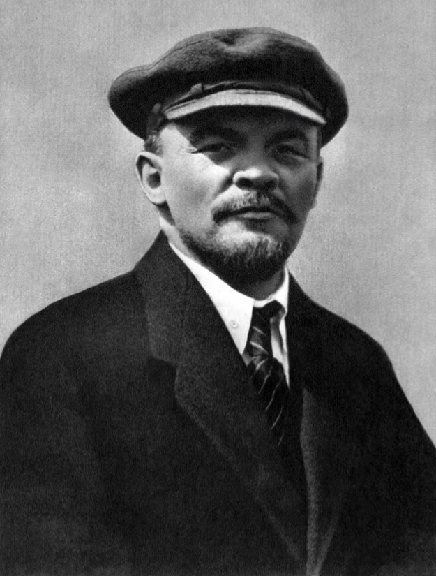
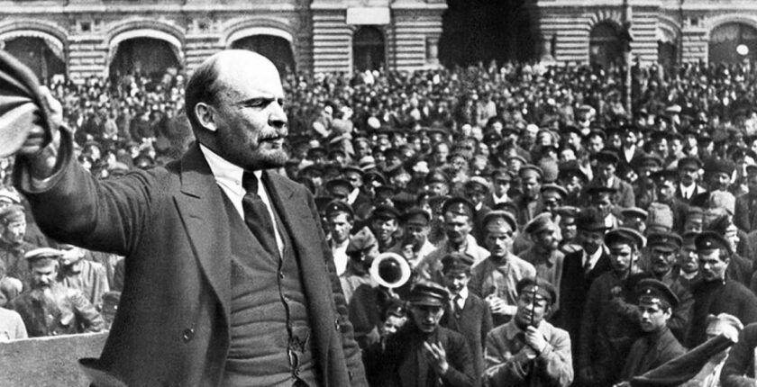
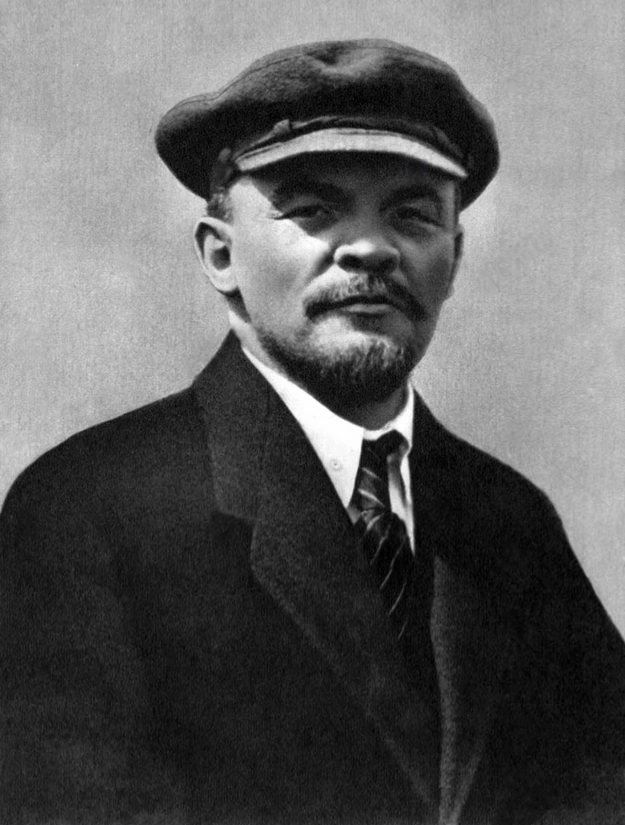
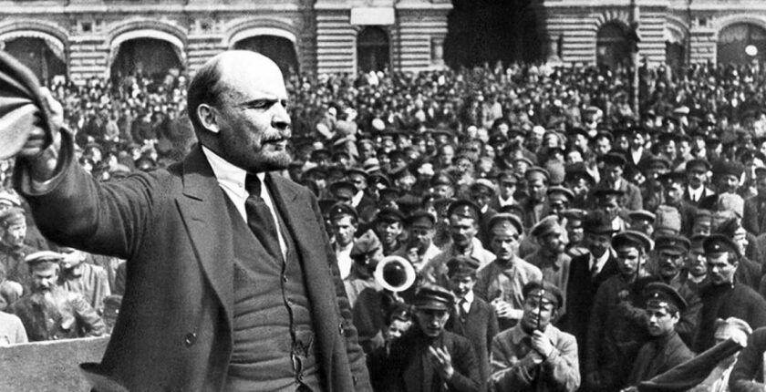